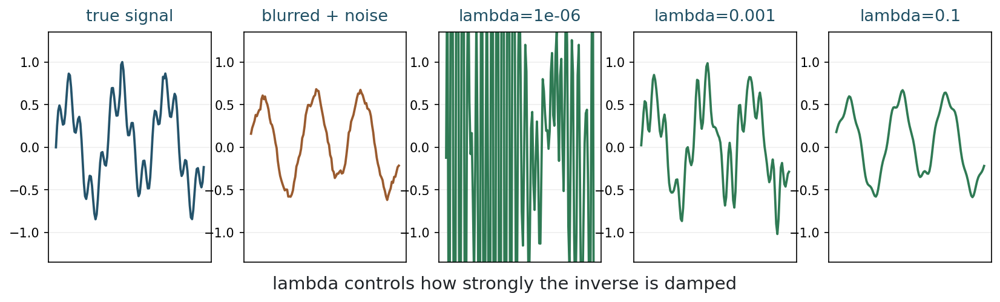
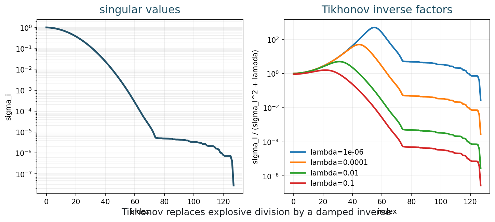
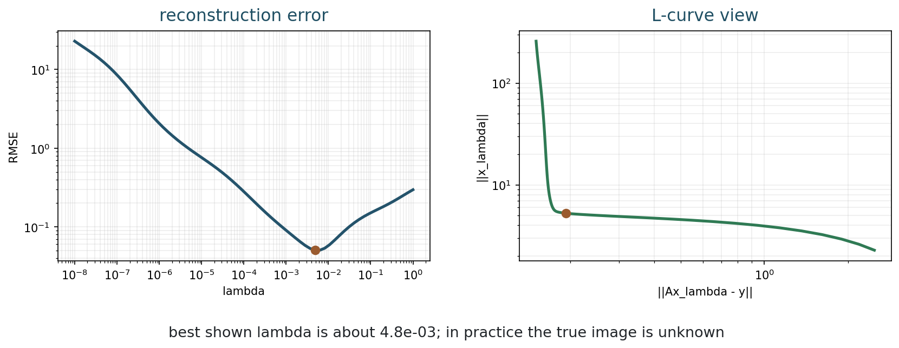
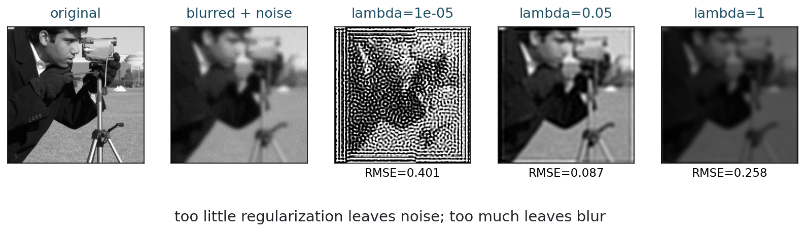
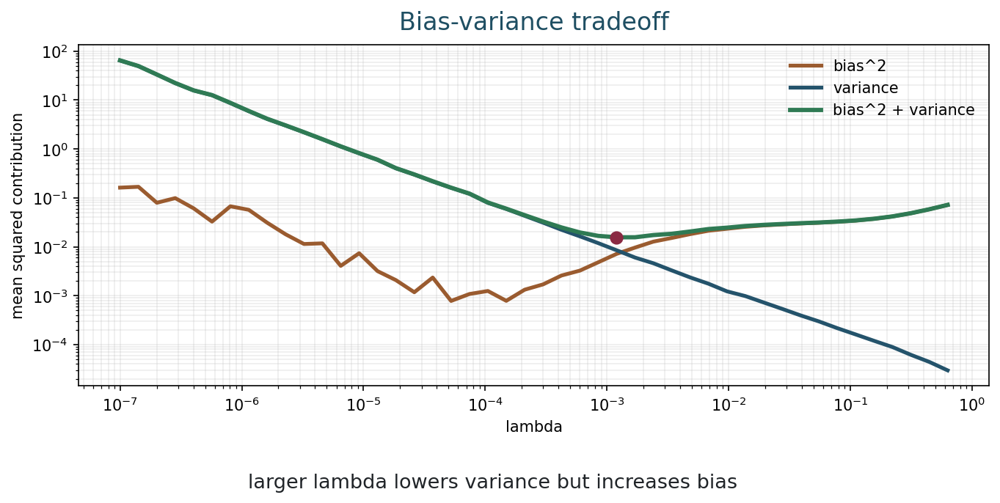

MATH 435: Mathematical Imaging - Week 6
2001-06-01
Stabilizing an inverse
If exact inversion is unstable, what should we give up: exact data fit, sharpness, or both?
| Time | Work |
|---|---|
| 0-8 min | recap ill-posedness and small singular values |
| 8-20 min | penalized least squares |
| 20-34 min | normal equations and closed form |
| 34-48 min | SVD and filter factors |
| 48-60 min | parameter effects |
| 60-68 min | bias-variance tradeoff |
| 68-72 min | project assignment note |
| 72-75 min | exit checkpoint |
Week 5 showed that direct inversion may amplify noise:
\frac{\langle \eta,u_i\rangle}{\sigma_i}.
How can we keep useful directions without exploding in unstable directions?
For a linear imaging model:
y = Ax + \eta.
The least-squares data fit is
\|Ax-y\|_2^2.
For Gaussian noise, this comes from the likelihood.
If A is ill-conditioned, the least-squares solution can fit noise.
Data fit alone does not know which data components are reliable.
Add a stabilizing penalty
Least squares plus size control
The simplest Tikhonov model is
x_\lambda = \operatorname*{argmin}_x \|Ax-y\|_2^2 + \lambda\|x\|_2^2.
The parameter \lambda>0 controls the strength of regularization.
Data term:
\|Ax-y\|_2^2
prefer reconstructions that explain the measurements.
Penalty term:
\lambda\|x\|_2^2
prefer smaller-energy solutions.
If two images explain the data similarly, which one should we prefer?
Tikhonov’s answer:
Prefer the one with smaller norm.
5 minutes
Predict what happens to
\|Ax-y\|_2^2+\lambda\|x\|_2^2
when:

Closed form
Differentiate the objective
Let
J(x)=\|Ax-y\|_2^2+\lambda\|x\|_2^2.
Expanding:
J(x)=(Ax-y)^T(Ax-y)+\lambda x^T x.
The gradient is
\nabla J(x) = 2A^T(Ax-y)+2\lambda x.
At a minimizer:
\nabla J(x_\lambda)=0.
Setting the gradient to zero gives:
A^T(Ax_\lambda-y)+\lambda x_\lambda=0.
Therefore:
(A^TA+\lambda I)x_\lambda=A^T y.
If \lambda>0,
x_\lambda = (A^TA+\lambda I)^{-1}A^T y.
Tikhonov replaces an unstable inverse by a stabilized linear solve.
If A has singular values \sigma_i, then A^TA has eigenvalues \sigma_i^2.
Tikhonov shifts them:
\sigma_i^2 \quad\longmapsto\quad \sigma_i^2+\lambda.
Small eigenvalues are lifted away from zero.
5 minutes
Suppose singular values are
1,\;0.1,\;0.001.
Compare the smallest eigenvalue of A^TA with that of A^TA+\lambda I for \lambda=0.01.
This is the direct matrix form for small educational examples.
What lambda does to each direction
Filter factors
Let
A v_i = \sigma_i u_i.
Then
x_\lambda = \sum_i \frac{\sigma_i}{\sigma_i^2+\lambda} \langle y,u_i\rangle v_i.
Direct inverse factor:
\frac{1}{\sigma_i}.
Tikhonov factor:
\frac{\sigma_i}{\sigma_i^2+\lambda}.
When \sigma_i is small, Tikhonov avoids division by a tiny number.

6 minutes
For \sigma=0.001, compare:
\frac{1}{\sigma} \quad\text{and}\quad \frac{\sigma}{\sigma^2+\lambda}
for \lambda=0.01.
What changed?
No free lunch
The parameter is the lesson
Small \lambda:
better data fit, more noise amplification.
Large \lambda:
more stability, more bias and blur.

The true image is usually unknown.
So the RMSE curve is a teaching diagnostic, not a practical parameter-choice method.
In practice, parameter choice may use validation data, discrepancy principles, cross-validation, or L-curve heuristics.

4 minutes
Which reconstruction would you choose visually?
Would your answer change if the image were for medical diagnosis?
What regularization buys and costs
Stability has a price
Imagine repeating the noisy measurement many times.
Bias:
systematic error from the average reconstruction.
Variance:
random variation across noise realizations.

5 minutes
Why can the error be large for both very small and very large \lambda?
Use the words “noise”, “bias”, and “stability”.
This week the modeling project is assigned.
See the project page for the current project structure and expectations.
From the repository root:
8 minutes
Open the Week 6 notebook.
For each expression, identify its role:
Answer in one sentence each:
| Question | Short answer |
|---|---|
| Tikhonov objective | data fit plus \ell_2 penalty |
| stability | small eigenvalues are shifted away from zero |
| too small | noise amplification remains |
| too large | solution is biased and over-smoothed |
Variational formulation:
MATH 435: Mathematical Imaging